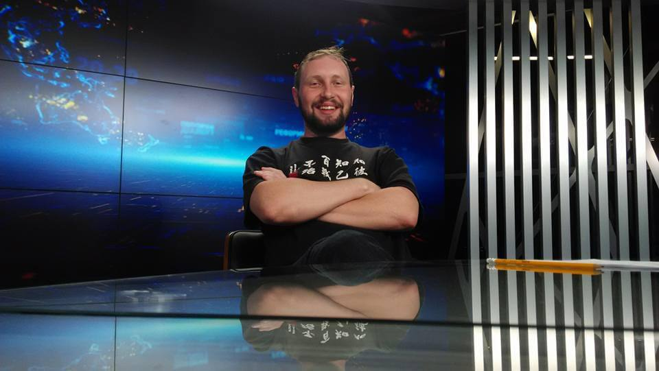

Mykola Belinskyi
Lille, France
belinskypress@gmail.com
Aperçu de carrière
Avocat expérimenté, rédacteur en chef de journaux et de télévision ukrainien, ainsi que programmeur indépendant.
À la recherche de nouvelles opportunités en France, prêt à relever de nouveaux défis et à accepter tout travail, même le plus simple.
Enthousiaste à l'idée de commencer un nouveau chapitre et de contribuer à tout projet.
Compétences personnelles
- Autonomie
- Capacité d'adaptation
- Rigueur
- Travail en équipe
Éducation
Collège Polytechnique Berdichev
2004 - 2008 | Spécialiste junior en droit
Université de droit de Kiev, Académie nationale des sciences d'Ukraine
2010 - 2013 | Master en droit économique
Langues
- Ukrainien : Courant
- Russe : Courant
- Anglais : Débutant
- Français : Débutant
- Polonais : Débutant
Expériences professionnelles
Rédacteur en chef, Chaîne de télévision ZIK
2019 - 2022
Éditeur de télétexte / Rédacteur de bande défilante
2017 - 2023
Rédacteur indépendant, Magazine des services communaux et de logement
2015 - 2016 | Soutenu par le Ministère ukrainien du développement régional, de la construction et du logement
Journaliste, Droit TV et Gazette Juridique et Judiciaire
2014 - 2017
Juriste, Zhitloremex 2
2010 - 2012
Chef de la défense civile, Zhitloremex 2
2009 - 2010
Centres d'intérêt
- Lecture
- Programmation
- Séries télévisées
- Vélo